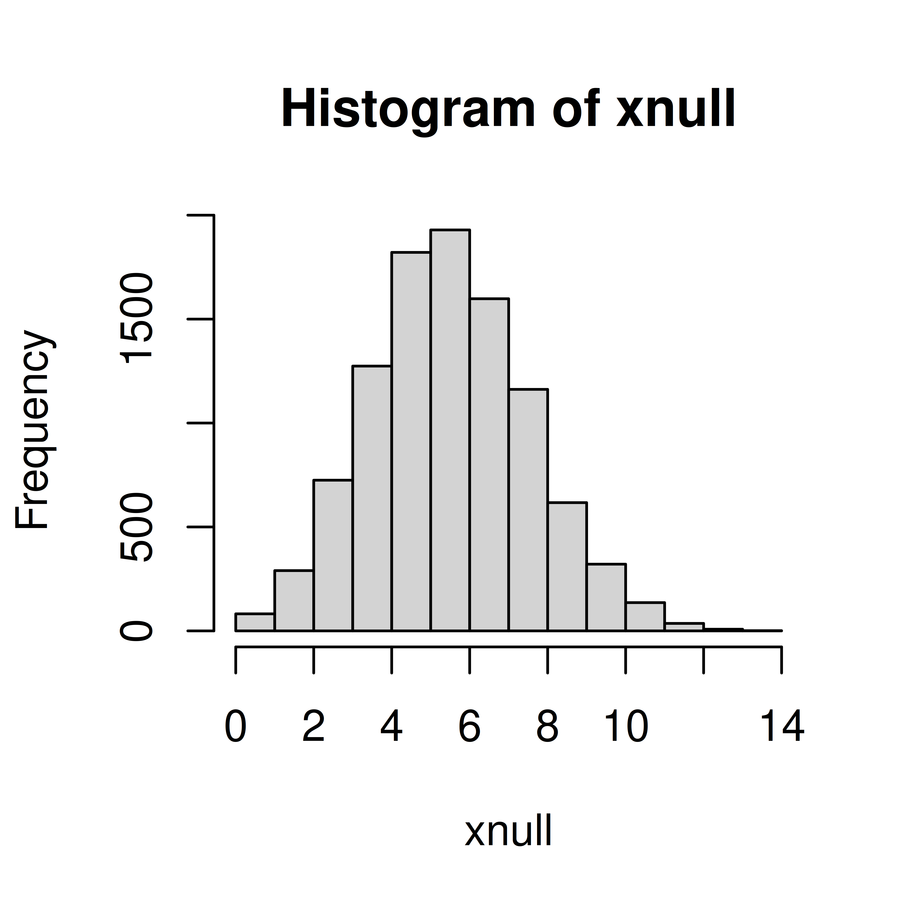
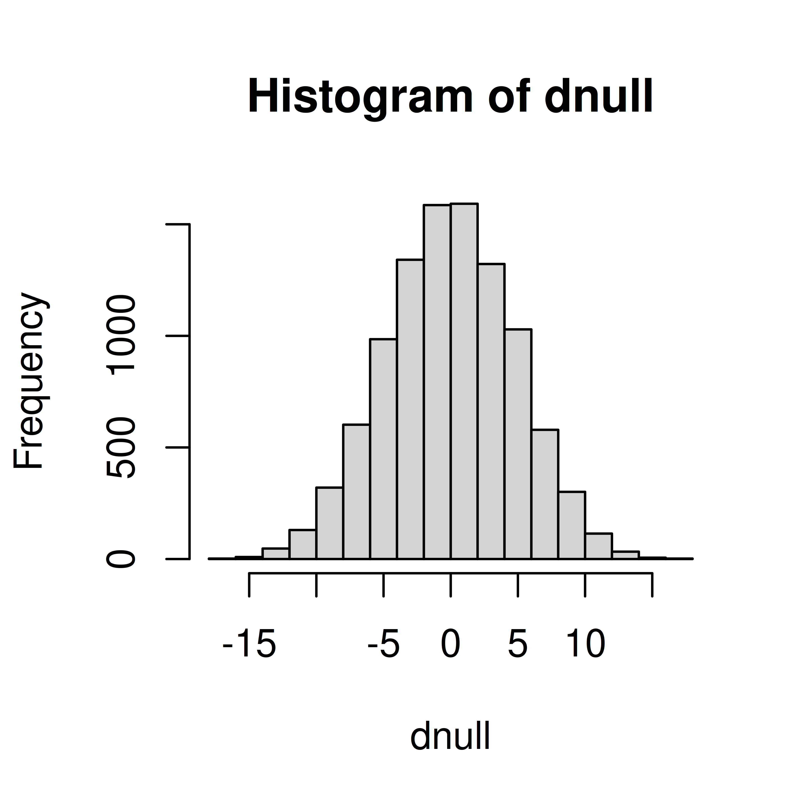

Exercises: Hypothesis tests, resampling
Exercise 1 (Pollen) You believe that the proportion of Swedish students allergic to pollen is greater than 0.3 (the proportion allergic to pollen in Sweden). To test this you observe 20 people in a student group at BMC in Uppsala, 9 or them are allergic to pollen.
Is this reason to believe that the proportion of Swedish students allergic to pollen i greater than 0.3? Perform a hypothesis test to answer the question.
Can you identify any problems with this study setup?
Solution
\(H_0: \pi=0.3\) \(H_1: \pi>0.3\)
Set the significance level to \(\alpha=0.05\).
Test statistic, \(X\), the number of allergic people in a sample of size 20.
\(x_{obs} = 9\)
Simulate null distribution
Compute p-value, i.e. if null is true what is the probability to observe \(x_{obs}\) or higher?
xobs <- 9
(x <- mean(xnull>=xobs))[1] 0.1119As \(p>\alpha\) we will accept the null hypothesis, i.e. there is no reason to belive that the students are more allergic than the general Swedish population.
Problems with the study: Discuss in your group! Is it reasonable to select 20 students at BMC to answer a question about all students in Sweden?
Exercise 2 (Diet) A diet study aims to study how the hemoglobin (Hb) levels in blood are affected by an iron-rich diet consisting of tofu, soybeans, broccoli, lentils and peas. To perform the study the dietician has recruited 40 male participants, who are randomly assigned to the iron-rich diet or control group (no change in participants diet), 20 participant in each group.
The observed Hb levels (in g/L);
ctrl <- c(197, 186, 157, 170, 193, 188, 175, 186, 177, 191, 168, 193, 191, 189, 188, 192, 179, 186, 197, 203)
iron <- c(187, 218, 196, 210, 206, 178, 181, 193, 172, 202, 169, 221, 183, 222, 185, 174, 192, 192, 162, 211)Perform a hypothesis test to investigate if the Hb level is affected (increased or decreased) by the iron-rich diet.
Solution
Define \(H_0\) and \(H_1\)
\(H_0: \mu_{diet} = \mu_{ctrl}\) No difference in mean iron level between control group and iron rich group
\(H_1: \mu_{diet} \neq \mu_{ctrl}\)
Will use the significance level, \(\alpha=0.05\)
Select test statistic \(D = \bar X_d - \bar X_c\), where \(\bar X_c\) is the mean Hb level in a control group of 20 people and \(\bar X_d\) is the mean Hb level in a diet group of 20 people.
The observed value; \(d_{obs}\)
mdiet <- mean(iron)
mctrl <- mean(ctrl)
(dobs <- mdiet - mctrl)[1] 7.4Compute null distribution using permutation.
## Under null all observations are equivalent
allobs <- c(iron, ctrl)
dnull <- replicate(10000, {
##Permute the 40 observations and assign the 20 first to the iron group
x <- sample(allobs)
d <- mean(x[1:20]) - mean(x[21:40])
})
hist(dnull)
Compute p-value;
(p <- mean(abs(dnull) >= abs(dobs)))[1] 0.1257As \(p>\alpha\), the null hypothesis is accepted, i.e. there is no reason to believe that the iron-rich diet affects the blood Hb level.